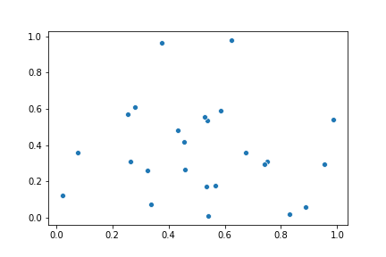

Ok, so, I said this would be my next post and I'm sticking to it, but I'm definitely going to have to break it down into parts. So the first part of "What is supervised learning?" that I'm going to tackle is "What is machine learning?" So, as a good student of the current information age, the first thing I did in preparing this post was to google the very phrase. I came upon a very nice article that gives the following definition:
Machine Learning is the science of getting computers to learn and act like humans do, and improve their learning over time in autonomous fashion, by feeding them data and information in the form of observations and real-world interactions.
It honestly is a very nice definition and is appropriately broad, but I feel like if I said this to most of the people I know, they wouldn't really know much more about what I am learning when I say I am studying machine learning within data science. So, this is my shot at remedying that. I'm going to try to break down the statement and answer a couple of questions:
I think, that when most people hear the term 'machine learning' it likely conjures up some image of an almost-sentient robot, that is probably out to get us. Like HAL. I figure most people conjure up HAL.
But to be honest, machine learning, at least what I am doing, is far simpler, and less scary, than that. What are the machines we are talking about, basically, computers. If you didn't know, if you go into an IT department, it's quite possible that they'll talk about your 'machine' instead of your computer, sometimes because they could also be referring to your laptop, or your tablet, or sometimes even your phone.
So, first off, machine = computer - no scary HALs involved!
Ok, so we've gotten the first bit sorted, we're talking about computers. Computers can learn?
The short answer is yes. What does that look like? In the very basic sense, what we do with computers is that we have some inputs, we program the computer to be able to do some things with those inputs, and we get something out. (That's also the machine part of it) So, what we are doing with machine learning is that instead of having to tell the computer exactly what to do at every step, with every input, we can help it work out some of the steps itself. How do we do that?
In short, the answer is math. A whole bunch of it. I remember in my senior years in high school I took differential calculus and linear algebra courses and we would pester our math teachers about, "When are we ever going to use this in the real world?" Well you know what folks, I found it. The stuff that I'm doing these days is all about math. We program the computer to be able to take math inputs, to work out how to do incremental math with them, and then generate an output. You might think that this sounds rather simplistic to get machines to act like humans, but math, my friends, can get rather complicated! And, if we apply it cleverly, it can do amazing things!
Thankfully for you (and me) you don't actually have to be a math genius to at least start on this, because other people have done a lot of the work for you. (Though, if you feel like being a math genius about this stuff, it certainly doesn't hurt!)
So we've answered two questions:

Ok, ok, I agree, so far, I've been pretty vague on what we're talking about with computers learning. We know it has something to do with math, but what else are we talking about?
Well, interestingly, if you've ever had to do some statistics and dealt with correlation, or have done some math using linear regression, or even just talked about trend lines in data, you my friend, have a basic understanding of one of the algorithms we can use in machine learning! Did you notice how I conveniently snuck a new term in there on you?
ALGORITHM
Sounds scary, doesn't it? ;)
Well, maybe not as much as you think. What is an algorithm? In the terms we are using, an algorithm is a mathematical function that helps us to make a decision. And, like I said, if you have done any of the above, you actuall know one of them!
As a quick reminder, in typical linear regression, we have characteristic that is measured in numbers and we believe it is related to another characteristic. We then plot these pairs of characteristics on a chart as coordinates. It would look something like this:
If we thought these characteristics were related (These ones aren't really), we might then draw a line through them that best explains how the points along the x-axis (horizontal) estimate the prediction of the points on the y-axis (vertical). And that would be linear regression.

You've done or seen something like that before, right?
"So what does this have to do with machine learning?" you might ask. This is a pretty great question.
What we do when we do linear regression is that we construct a formula that finds the line of best fit for the data. We could then take a new piece of data for the x-axis and then pop it into the formula to predict what the y-axis value would be. In essence, we have written something that can tell the computer what to do with many different values. You can put in any value, and it will tell you what it wants to do. (This is where you can get the combination of statistics and programming in data science - the statistics to do the math, the programming to talk to the computer)
We can add onto this by taking very large datasets, starting with a small chunk, working out the line of regression for those dots, taking a new selection of dots and writing another function to adjust our original line based on the new information. This is how the machine learns. We give it an initial approach to understand the data, such as linear regression, we give it other functions to tell it how to adjust for new data, and then we give it a bunch of data. The great thing about a compter is that it can then do these types of calculations many times over to keep adjusting the function and getting the final answer. This is much faster than it would be if we were trying to the calculations ourselves.
I think that answers the question of how computers learn. We create functions that help the first organize/understand some data, and then we create additional functions that explain how to incorporate new data into the original function. The function will then allow the computer to take some form of new data and decide something about it. And voila! The computer has learned!
There are many different algorithms that can handle data, each with different approaches, and strengths and weaknesses associated. But that is for more posts!
It does sound scary if we link machines are going to act like humans, doesnt' it? Does kind of sound like we're expecting them to reach sentience and rise up and take over the world, yes? And the answer is, no, we're not really trying to do that.
Instead, we are hoping that our algorithms can help the computers detect patterns in information and make a decision or prediction. What does this look like? Some examples could include:
If you didn't notice, with that last section I actually gave the answer to the fourth question, "How do we feed them data?" What we do is feed them information about something to understand or predict and give a base for how to do so. We can feed it more information that it can use by giving it another function on how to incorporate the details of the additional information into the original function.
So, to recap our questions and answers:
Doing all of this can create a situation where we have a whole bunch of data that relates to a particular situation, and the computer can work out a function that allows us to clearly distinguish between whether something is or is not (e.g. earns over $50k per year or not) or make a prediction about a specific value. It can do so with much more complex data than we as humans can usually determine. This is one of the reasons it can be so powerful - what to us looks like a random mess can often be put together in a way that DOES make sense of the numbers.
Ok, that was a LOT. So, I'm going to continue later with what actually is supervised learning, yeah? Catch you soon!
whispers (But really it's all about evil HAls, ok?)